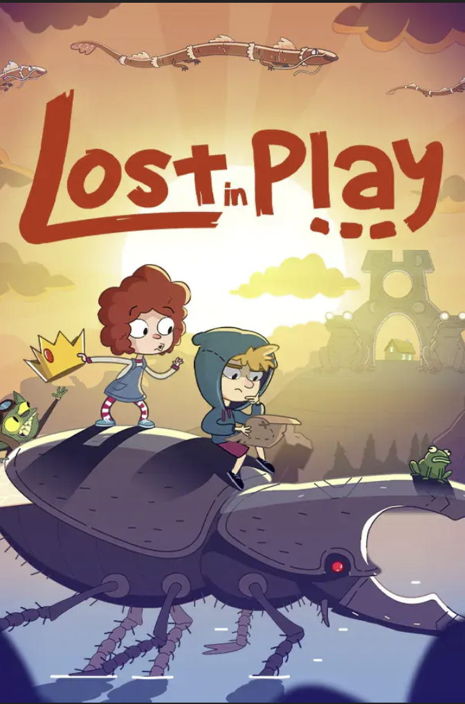
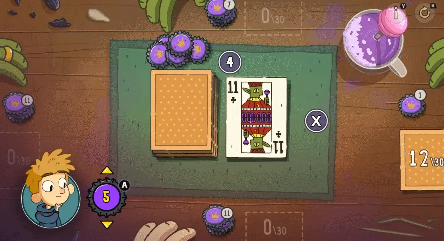
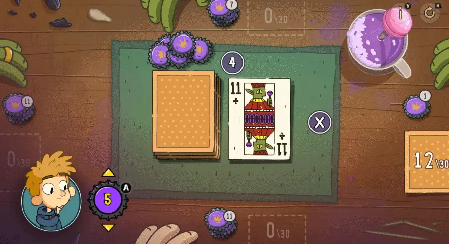

로스트 인 플레이

출시일 : 2022년 8월 11일
장르 : 인디 게임,어드벤처, 퍼즐
가격 : 20,500원
남매가 꿈속을 여행하며 마법 생물들과 친구가 되는 기분 좋은 모험을 떠나세요. 상상의 세계 속에서 Toto와 Gal은 함께 퍼즐을 풀고 집으로 돌아가야 합니다. 이 재미있는 퍼즐 어드벤처 게임에서는 마치 만화를 플레이하는 듯한 즐거움을 느낄 수 있죠!

기준일:
2024-12-21 |
|
|---|---|
| 메타스코어 82/100 | 유저 평점 7.7/10 |

기준일:
2024-12-21 |
|
|---|---|
| 종합 평가 | 최근 평가 |
| 압도적으로
긍정적(98%) (평가 5,601개) |
매우
긍정적(95%) (평가 96개) |
1. 생동감 넘치는 카툰풍 비주얼

 '인터랙티브 카툰'을 표방한 이 작품은 미국 애니메이션에서 볼 수 있을 법한 개성 넘치는 캐릭터들이 등장한다.
어린 시절의 추억과 상상력을 기반으로 한 이야기로, 어른뿐만 아니라 아이들까지 모든 연령층이 즐길 수 있다.
'인터랙티브 카툰'을 표방한 이 작품은 미국 애니메이션에서 볼 수 있을 법한 개성 넘치는 캐릭터들이 등장한다.
어린 시절의 추억과 상상력을 기반으로 한 이야기로, 어른뿐만 아니라 아이들까지 모든 연령층이 즐길 수 있다.
2. 포인트 앤 클릭 어드벤처 방식
단순한 조작이지만 조작으로 볼 수 있는 연출은 다양하다. 스토리와 이어지는 필수 오브젝트 외에도 상호작용할 수 있는 오브젝트도 여럿 등장하고, 이것들을 하나씩 클릭해보며 서로 다른 반응을 지켜보는 것도 하나의 재미 요소가 된다. 게임 경험이 아예 없는 이들도 문제없이 게임을 플레이 할 수 있을 정도이다.
3. 창의적인 퍼즐과 상상력을 자극하는 게임 플레이
 다양한 상황과 오브젝트를 활용해 스토리를 풀어가는 과정이 신선하고 도전적이다.
이러한 요소는 지루하지 않게 게임을 진행할 수 있게 한다.
다양한 상황과 오브젝트를 활용해 스토리를 풀어가는 과정이 신선하고 도전적이다.
이러한 요소는 지루하지 않게 게임을 진행할 수 있게 한다.
'인터랙티브 카툰'을 표방한 이 작품은 미국 애니메이션에서 볼 수 있을 법한 개성 넘치는 캐릭터들이 등장한다.
어린 시절의 추억과 상상력을 기반으로 한 이야기로, 어른뿐만 아니라 아이들까지 모든 연령층이 즐길 수 있다. 2. 포인트 앤 클릭 어드벤처 방식
단순한 조작이지만 조작으로 볼 수 있는 연출은 다양하다. 스토리와 이어지는 필수 오브젝트 외에도 상호작용할 수 있는 오브젝트도 여럿 등장하고, 이것들을 하나씩 클릭해보며 서로 다른 반응을 지켜보는 것도 하나의 재미 요소가 된다. 게임 경험이 아예 없는 이들도 문제없이 게임을 플레이 할 수 있을 정도이다.
3. 창의적인 퍼즐과 상상력을 자극하는 게임 플레이

다양한 상황과 오브젝트를 활용해 스토리를 풀어가는 과정이 신선하고 도전적이다.
이러한 요소는 지루하지 않게 게임을 진행할 수 있게 한다.